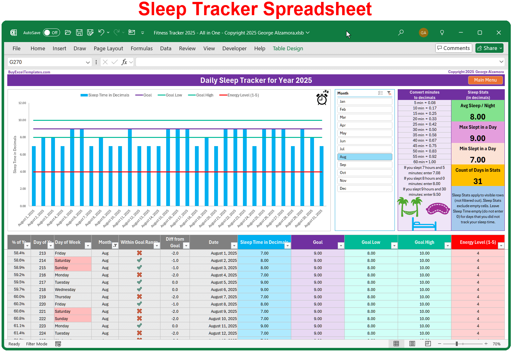

How I Tracked 847 Mornings and Found My Perfect Bedtime

Eight hundred and forty-seven mornings. That's not a typo. I literally tracked every single wake-up for over two years.
It started as a science experiment. I was still at CU Boulder, working in the sleep lab, and I had access to all this fancy equipment. EEG caps, actigraphy watches, the works. I thought, "If I'm going to tell other people how to sleep, I should know everything about my own sleep." So I started logging. Bedtime. Wake-up time. How many times I woke up at night. How I felt in the morning. What I ate the night before. Whether I exercised. Whether I had alcohol. Everything.
The first six months, I was obsessed. I would wake up, grab my notebook, and write down every detail before I even peed. My husband thought I had lost my mind. He'd say, "You're not a research subject. You're my wife." I'd say, "I'm both." He gave up arguing.
By month eight, I had a spreadsheet with two hundred and forty-seven rows. I started running correlations. Did alcohol affect my wake-ups? Yes — two drinks meant I woke up at 3 AM without fail. Did exercise help? Yes, but only if it was before 6 PM. After 6 PM, I slept worse. Did eating late matter? Yes — any food within two hours of bedtime gave me weird dreams. Not bad dreams, just weird ones. I dreamt about spreadsheets twice. That's when I knew I had a problem.
By month twelve, I had four hundred mornings logged. I thought I would have found my perfect bedtime by then. I hadn't. Because my perfect bedtime kept changing. In winter, I needed to go to bed earlier. In summer, later. On days I exercised, I needed fifteen minutes less sleep. On days I had a stressful meeting, I needed thirty minutes more. The data was chaos. I was confused. Not "I don't get it" confused — I'm a scientist, I get data. But the data was telling me there was no single perfect bedtime. That my body was more dynamic than I wanted it to be.
I almost gave up. Then I had a conversation with a colleague, Dr. Elena, who said, "You're looking for the wrong thing. Don't look for the perfect bedtime. Look for the perfect range." That changed everything.
See, your body doesn't have a fixed bedtime. It has a window. For most people, that window is about forty-five minutes wide. For me, it's 10:30 PM to 11:15 PM. That's forty-five minutes. Anywhere in that window, I fall asleep easily and wake up feeling fine. Outside that window, I struggle. So instead of trying to hit the exact same time every night — which is impossible with a kid and a job — I started aiming for the window.
I went back through my four hundred mornings and looked for patterns. I found that my best sleep happened when I went to bed between 10:30 and 11:15, woke up between 6:30 and 7:00, and had no more than one night waking. That was it. That was the formula. Not a single number. A range.
That realization took me from obsession to peace. Because I stopped trying to be perfect. I started trying to be good enough.
Now let me show you what I learned from those eight hundred and forty-seven mornings. I'm going to give you the highlights, not the full spreadsheet, because that would be boring and also I lost the file when my laptop died in 2022. (Back up your data, kids.)
First, consistency matters more than duration. I had mornings where I slept six and a half hours but felt great because I went to bed at the same time as the previous three nights. I had mornings where I slept eight hours but felt terrible because my bedtime had drifted by two hours from the night before. Your brain loves predictability. It releases melatonin at the same time every night if you let it. If you keep changing your bedtime, your brain never knows when to get ready.
Second, the ninety-minute cycle thing is real but not rigid. I found that my natural cycle length is about eighty-seven minutes, not ninety. That tiny difference means that if I use the standard ninety-minute calculator, my optimal wake-up time is off by about six minutes. Not a big deal. But over a week, that's forty-two minutes of misalignment. Enough to feel. So I adjusted my calculator to use eighty-seven minutes instead. You can do that too — most of my tools let you adjust the cycle length.
Third, the two hours before bed matter more than the eight hours of sleep. What I did from 8 PM to 10 PM predicted my sleep quality better than anything else. If I scrolled my phone in that window, my deep sleep dropped by about fifteen percent. If I watched a tense show — I'm looking at you, Succession — my heart rate stayed elevated and I woke up more. If I read a paper book and had a cup of herbal tea, I slept like a rock. Boring, but true.
A woman named Rachel was a night shift nurse. She couldn't control her bedtime because her schedule was chaos. But she could control her wind-down window. She started doing a twenty-minute routine before every sleep — same order, same dim light, same playlist. Her sleep quality improved even though her bedtime was all over the place. Because the routine became a signal. Her brain learned: "this sequence means sleep soon."
That's the power of a consistent wind-down. It doesn't matter when you do it. It just matters that you do it.
So after eight hundred and forty-seven mornings, here's what I actually use now. I don't use a spreadsheet anymore. I don't track everything. I just follow three rules.
Rule one: go to bed within my forty-five-minute window. For me, that's 10:30 to 11:15. For you, it might be different. You can find your window by doing this: for one week, go to bed when you feel sleepy. Not when you think you should. When you actually feel sleepy. Write down that time each night. Then look at the range. That's your window.
Rule two: wake up at the same time every day, even on weekends. This was the hardest for me. I love sleeping in. But I found that if I slept in by more than an hour on Sunday, I felt terrible on Monday. So now I wake up at 7:00 every day, including Saturday and Sunday. I'm not saying I like it. I'm saying it works.
Rule three: have a thirty-minute wind-down before bed. No screens. No work. No stressful conversations. Just reading, stretching, listening to music, or doing nothing. I literally sit on my couch and stare at the wall sometimes. It feels wasteful. It's not.
If you want to find your own bedtime window without doing an eight-hundred-and-forty-seven-morning experiment, there's a tool for that.
The bedtime finder doesn't need eight hundred and forty-seven days. It needs about a week. You tell it what time you went to bed, how long it took to fall asleep, and how you felt in the morning. After a few days, it starts to see a pattern. It'll say something like "your optimal bedtime window appears to be 10:45 PM to 11:15 PM" or "you might be a night owl — try going to bed at 12:30 AM instead." It's not magic. It's just pattern recognition.
I also still use the cycle calculator when my schedule changes. Travel, daylight savings, Leo's school starting earlier — all those things mess with my window. The calculator helps me find my new anchor.
Here's an example. Last month, Leo's school started at 8:00 instead of 8:30. That meant I had to wake up at 6:30 instead of 7:00. I used the cycle calculator to find a new bedtime. It gave me four options: 9:00 PM, 10:30 PM, 12:00 AM, and 1:30 AM. Obviously I wasn't going to bed at 9:00 PM — Leo isn't even asleep then — or 1:30 AM — that's insane. So I picked 10:30 PM. That gave me eight hours until my new wake-up — 6:30 AM — which is five point three cycles. Close enough. I tried it for three days. Felt fine. Kept it. That took thirty seconds of work.
Before I had the calculator, I would have just gone to bed at my usual 11:00 PM and woken up at 6:30 feeling like garbage. That's what I did for years. I just accepted the garbage feeling. Now I know better.
One more thing about tracking. You don't need to track forever. I tracked for eight hundred and forty-seven mornings because I'm a nerd and I had a research agenda. You can track for two weeks and get ninety percent of the benefit. Two weeks of logging your bedtime, wake-up time, and morning feeling will tell you your window. That's enough.
A guy named Steve tracked for a month. He found that his ideal bedtime was 12:15 AM, not 11:00 PM. He had been forcing himself to go to bed early because "that's what adults do." He shifted to 12:15 and started sleeping through the night for the first time in years. He stopped tracking after two weeks. He didn't need the data anymore. He just needed to know his number.
So here's my challenge to you. For the next two weeks, do this: every morning, write down what time you went to bed, what time you think you fell asleep, and how you feel on a scale of one to ten. Don't change anything. Just observe. At the end of two weeks, look for patterns. On nights when you felt good, what time did you go to bed? On nights when you felt bad, what time? You'll probably see a window emerge. That's your window.
Then use the bedtime finder to refine it. Then use the cycle calculator whenever your schedule changes. That's it. That's the whole system.
I still use my own tools. I took my own sleep quality score last week. It was seventy-six. Not great, not terrible. I know my window, I know my cycle length, I know my debt. And I still have nights where I mess up — I stay up too late, I scroll my phone, I have wine with dinner. But I don't obsess anymore. Because I know what works. And when I deviate, I know exactly what I'm losing.
Take the quiz if you haven't. Then pick one thing to change. Not ten. One. Do that for two weeks. Then come back and take it again. I bet your score goes up.
P.S. My eight-hundred-and-forty-seven-morning spreadsheet died with my old laptop. I was sad for about five minutes. Then I realized I didn't need it anymore. The data had done its job. It taught me how to sleep without it. That's the goal — to outgrow the tools.